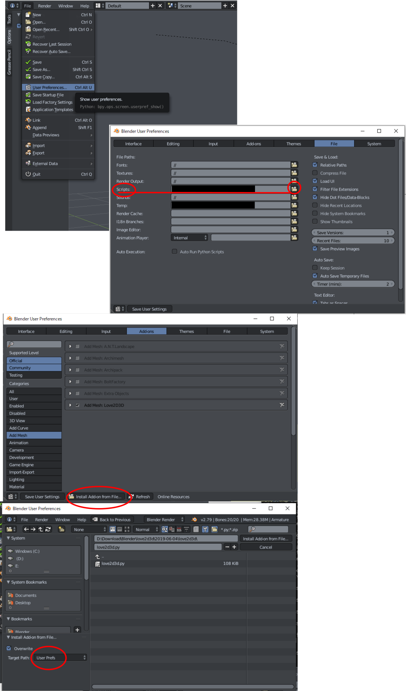

Blenderのアドオンです。画像から3Dモデルを作ります。
Blender addon to create 3D object from 2D image.
右側の画像から左の3Dモデルが作られました / 3D object in left was created from image in right.
使い方 / How to use
トラブルシューティング / Troubleshooting
アドオンを読み込むとエラーが出る。 / Error happen on loading the addon.
Blender公式サイト以外からダウンロードしたBlenderだと読み込めないことがあるようです。
Blender公式サイトからBlenderをダウンロードして、アドオンを読み込んでみてください。
それでも読み込めない場合は、図の手順でアドオンを保存するフォルダを指定してください。
Download Blender from the official and try to load the addon once.
If error happen yet, you look at the figure and set path for addon.

リンク / Link
License
Copyright 2018 Fuji Sunflower
Licensed under the Apache License, Version 2.0 (the "License");
you may not use this file except in compliance with the License.
You may obtain a copy of the License at
http://www.apache.org/licenses/LICENSE-2.0
Unless required by applicable law or agreed to in writing, software
distributed under the License is distributed on an "AS IS" BASIS,
WITHOUT WARRANTIES OR CONDITIONS OF ANY KIND, either express or implied.
See the License for the specific language governing permissions and
limitations under the License.